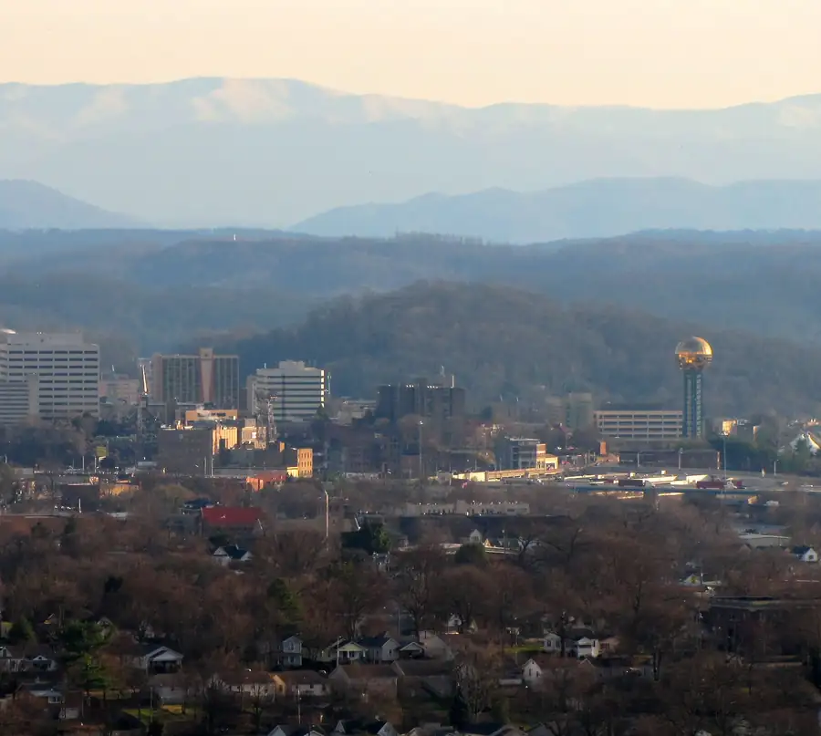
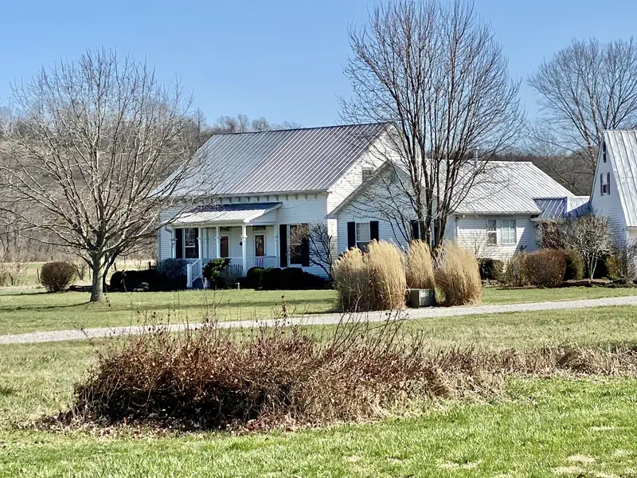
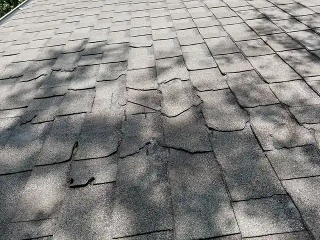

Roofing company in Knoxville, TN
Knoxville roofing with straight answers and written prices
We fly your roof with a drone, show you every photo, and hand you a line-by-line price before anyone touches a shingle. Ryan Dix, the owner, writes every estimate himself.

- Free drone inspection. Photos you keep either way.
- Written, line-by-line prices. No number scribbled on a card.
- The owner writes every estimate. Ryan Dix, Knoxville.
- Text a photo, get an answer. Same number as the phone.
- Crestone started in Colorado in 2018. Run here by Ryan Dix, who lives in Knoxville.
The owner writes your price
Ryan Dix runs Crestone Roofing in Knoxville. He looks at your roof, writes your price line by line, and walks the finished job with you.
Before roofing, Ryan spent 20 years in finance and operations, which is where the line-by-line price comes from.
What we do
Roof replacement
Full tear-off to the deck, flashing and boots replaced, the yard swept for nails.
Roof repair
Leaks, lifted shingles, cracked pipe boots. Fixed, with photos of the fix.
Storm damage and insurance
We photograph the damage, write the scope, and meet your adjuster on the roof.
Free drone inspection
Every slope photographed close up, without anyone walking on your shingles.

A metal-roofed farmhouse in Belleview, Kentucky. Stock photo, not a Crestone job. Metal roofing
Standing seam and exposed-fastener metal for homes, cabins and barns.
Gutters
One-piece gutters formed on site and sized for a Knoxville downpour.
What a roof costs around Knoxville
About $15,000 to $30,000
That's the range for most asphalt shingle replacements on Knoxville-area homes of about 2,000 square feet. Steeper roofs, extra layers to tear off, rotted decking and premium shingles push it up. A simple roof on a ranch house can come in under it. Your free inspection gets you the real number, in writing.
See your roof from above
Type your address and look at your own roof from the satellite. Then tell us what you're worried about. We'll come look up close for free.
Your address goes to Google to draw the map. We don't see it unless you send us the form.
Open your address in Google Maps. Tap the Satellite layer to see your roof. Snap a screenshot and text it to us.
Text us the screenshotThat's the satellite view, which can be a few years old. Our drone photos will be from this week.
Book my free drone inspectionHow it works
Tell us about the roof.
Call, text a photo, or fill in four boxes. Takes about a minute.
We fly it and look.
A free drone inspection, plus a ladder where a close look needs hands. You get the photos.
You get a written price.
Line by line: tear-off, decking, underlayment, shingles, flashing, cleanup. You know what you're paying for.
We build it and clean up.
We give you the schedule in writing before we start, and we walk the finished roof with you.
After a storm
Hail or wind hit your street?
Don't climb up there. Take photos from the ground, cover anything that's leaking, and call us before you sign anything with a door knocker. We'll inspect for free and tell you straight if it's worth a claim.

- Hail bruises are hard to see from the driveway. The drone gets close.
- We meet your adjuster on the roof and point to every hit.
- You pay your deductible. We never waive it or cover it.
A drone inspection, free
We fly a camera drone over your roof, take close-up photos of every slope, and go through them with you. It's free, and the photos are yours even if you never hire us.
Ask us anything about your roof
Type a question. We'll show you the answer from our own FAQ. If it's not there, text us and a person answers.
We don't have that one written down yet. Text it to us at (865) 830-8126 and Ryan will answer.
Text your questionAnswers come from our FAQ. Text us a photo instead
Where we work
Ten towns across Knox, Blount, Loudon, Anderson and Sevier counties. Each town page covers its permit office, its common roof types, and the weather that wears them.
Read before you call anyone
How a roof insurance claim works in Knox County
The steps from storm to finished roof: inspection, filing, the adjuster visit, the scope, and what you pay.
What a roof replacement costs in Knoxville in 2026
Most asphalt shingle roofs on Knoxville-area homes land around $15,000 to $30,000.
Hail damage or wind damage? How to tell the difference
Bruised shingles versus creased and lifted tabs.
Repair or replace? How to decide on a Knoxville roof
Roof age, number of leaks, decking, and storm damage.
Questions we hear most
How much does a roof replacement cost in Knoxville?
Most asphalt shingle replacements on Knoxville-area homes of about 2,000 square feet land around $15,000 to $30,000. Where yours falls depends on the size and pitch of the roof, how many layers have to come off, how much rotted decking we find, and which shingle line you pick. A steep, cut-up roof with a second layer underneath costs more than a simple ranch roof. Your free inspection gets you a written price, line by line, so you can see exactly where the money goes.
Is the drone inspection really free?
Yes. There's no charge and nothing to sign. We fly your roof, take close-up photos of every slope, and go through them with you. The photos are yours whether you hire us or not. If your roof is in good shape, we'll tell you that and leave.
After a storm, should I call my insurance company or a roofer first?
We'd get a free inspection first. It tells you whether there's damage worth a claim before anything goes on your record. If there is, you file the claim with your insurer (it's your claim) and we'll document the damage, write the scope, and meet the adjuster on the roof with you. If there isn't, you've lost nothing but an hour.
Who pays the deductible?
You do. Your deductible is your share of the claim, and we never waive it, cover it, or rebate it. If a roofer offers to "take care of your deductible," that's a reason to walk away, because it puts your claim at risk. Some policies carry a separate deductible for wind or hail; check your declarations page so the number isn't a surprise.
How long does a roof replacement take?
For a typical house, we're on site one to three days, depending on size, pitch, how much decking needs replacing, and the weather. Before we start, you get the schedule in writing. If rain moves it, we call you. Anything we open, we close or tarp before we leave for the night.
Is Crestone a Colorado company?
The Crestone Roofing name started in Colorado in 2018, founded by Luke Jones and Eddie Ramey. Here, the company is run by Ryan Dix, who lives in Knoxville. The Knoxville company buys its own materials, writes its own estimates, and answers its own phone. When you call, you get someone here.
Book your free inspection
Free drone inspection, photos you keep, a written price. Send four details and we'll call you back to set the time.
Rather talk? Call (865) 830-8126. Rather text? Send a photo.